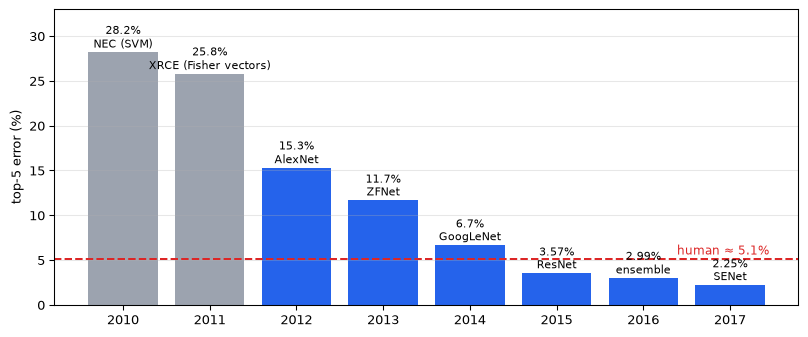
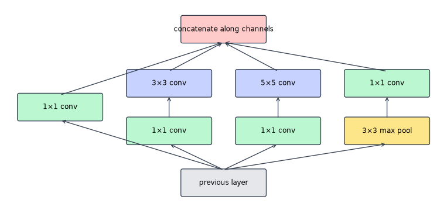
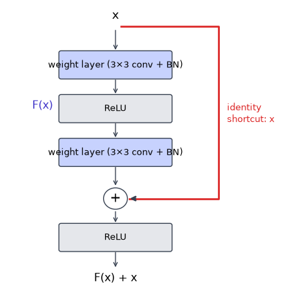

Famous CNN Architectures
The four architectures every CV engineer knows: AlexNet (2012), VGGNet (2014), GoogLeNet (2014), and ResNet (2015). Each introduced one key idea the field has carried forward.
01 The ImageNet challenge
What ImageNet is
- Dataset: 14+ million hand-labelled images across 20,000+ categories.
- Challenge subset: 1.2M training images, 1000 classes.
- Metric: top-5 error — prediction is "right" if the true label appears in the model's top-5 guesses.
Why it mattered
Pre-2012, classical computer vision (SIFT, HOG, Fisher vectors + SVM) was state of the art. The best teams were tied in the mid-20% top-5 error range.
In 2012, AlexNet hit 15.3% top-5 error — 10 points better than second place. The gap was unprecedented. Every subsequent year, the winner was a CNN:
| Year | Winner | Top-5 Error |
|---|---|---|
| 2011 | pre-DL | 25.8% |
| 2012 | AlexNet | 15.3% |
| 2013 | ZFNet | 11.7% |
| 2014 | GoogLeNet | 6.7% |
| 2015 | ResNet | 3.6% |
| 2017 | SENet | 2.25% |
The 2015 result crossed estimated human performance (~5%). The competition retired in 2017.
Why these four architectures still matter
They are the conceptual milestones:
- AlexNet — scale + ReLU + GPU training.
- VGG — depth with simple, uniform building blocks.
- GoogLeNet — parallel paths and 1×1 bottlenecks.
- ResNet — skip connections, enabling arbitrarily deep networks.
Modern architectures (EfficientNet, ConvNeXt, Swin Transformer, ...) are refinements and combinations of these ideas.
02 AlexNet (2012) — "deep CNN wins ImageNet"

Python code for this figure
import matplotlib.pyplot as plt
years = ["2010", "2011", "2012", "2013", "2014", "2015", "2016", "2017"]
err = [28.2, 25.8, 15.3, 11.7, 6.7, 3.57, 2.99, 2.25]
names = ["NEC (SVM)", "XRCE (Fisher vectors)", "AlexNet", "ZFNet", "GoogLeNet", "ResNet", "ensemble", "SENet"]
fig, ax = plt.subplots(figsize=(10, 4))
bars = ax.bar(years, err, color=["#9ca3af"] * 2 + ["#2563eb"] * 6)
for b, e, n in zip(bars, err, names):
ax.text(b.get_x() + b.get_width() / 2, e + 0.5, f"{e}%\n{n}", ha="center", fontsize=8)
ax.axhline(5.1, color="#dc2626", ls="--"); ax.text(7.45, 5.6, "human ≈ 5.1%", color="#dc2626", ha="right", fontsize=9)
ax.set_ylabel("top-5 error (%)"); ax.set_ylim(0, 33); ax.grid(alpha=0.3, axis="y")
plt.show()The architecture
- 5 convolutional layers — kernels of 11×11, 5×5, then 3×3 at depth.
- 3 fully-connected layers — 4096, 4096, 1000 units.
- Max pooling after some conv layers.
- ~60M parameters.
- Input: 227×227×3.
Key innovations
- ReLU activations — the first big network to use them instead of tanh/sigmoid. Faster training, no saturation.
- Trained on two GPUs in parallel (necessary — a single GPU of the era couldn't hold the model).
- Dropout (p = 0.5) in FC layers for regularisation.
- Aggressive data augmentation — random crops, horizontal flips, colour jittering.
- Local response normalisation (dropped by later architectures in favour of batch norm).
Historical significance
AlexNet is where "deep learning in production" began. Krizhevsky, Sutskever, and Hinton showed that:
- Backprop + big data + GPUs + ReLU + dropout = state of the art.
- Hand-engineered features were obsolete for perceptual tasks.
03 VGGNet (2014) — "small kernels stacked deep"
The architecture
- 16-19 layers (VGG-16 and VGG-19 are the common variants).
- Only 3×3 convolutions. Every single conv is 3×3.
- MaxPool 2×2 between conv blocks.
- 3 FC layers at the end (4096, 4096, 1000).
- ~138M parameters — the FC layers dominate.
Key insight — stack small kernels
VGG proved that a stack of three 3×3 convolutions has the same receptive field as one 7×7 convolution — but with:
- 27 params per filter instead of 49 (~45% fewer).
- Three non-linearities instead of one → more expressive.
- Easier to train than a single wide-kernel layer.
Legacy
- The "stack of 3×3" principle is now universal — every modern architecture uses it.
- VGG features are still a popular feature extractor for transfer learning, perceptual loss (style transfer, GANs), etc.
- The massive FC layers at the end became the first thing architects dropped. GoogLeNet and ResNet replaced them with global pooling.
04 GoogLeNet (2014) — "parallel operations and 1×1 bottlenecks"
The Inception module

Python code for this figure
import matplotlib.pyplot as plt
from matplotlib.patches import FancyBboxPatch
fig, ax = plt.subplots(figsize=(10, 4.6))
def box(x, y, txt, c):
ax.add_patch(FancyBboxPatch((x - 0.9, y - 0.28), 1.8, 0.56, boxstyle="round,pad=0.04", fc=c, ec="#374151"))
ax.text(x, y, txt, ha="center", va="center", fontsize=9)
def arrow(x0, y0, x1, y1):
ax.annotate("", (x1, y1), (x0, y0), arrowprops=dict(arrowstyle="->", color="#374151"))
box(4.5, 0, "previous layer", "#e5e7eb")
cols = [(0.9, [("1×1 conv", "#bbf7d0")]), (3.3, [("1×1 conv", "#bbf7d0"), ("3×3 conv", "#c7d2fe")]),
(5.7, [("1×1 conv", "#bbf7d0"), ("5×5 conv", "#c7d2fe")]), (8.1, [("3×3 max pool", "#fde68a"), ("1×1 conv", "#bbf7d0")])]
for x, stack in cols:
ys = [1.2, 2.3][:len(stack)] if len(stack) == 2 else [1.75]
arrow(4.5, 0.3, x, ys[0] - 0.3)
for (txt, c), y in zip(stack, ys):
box(x, y, txt, c)
if len(stack) == 2: arrow(x, ys[0] + 0.28, x, ys[1] - 0.28)
arrow(x, ys[-1] + 0.28, 4.5, 3.25)
box(4.5, 3.55, "concatenate along channels", "#fecaca")
ax.set_xlim(-0.3, 9.3); ax.set_ylim(-0.5, 4.1); ax.axis("off"); plt.show()Instead of picking one kernel size per layer, the Inception module runs all common sizes in parallel and concatenates their outputs along the channel axis.
Why this helps: different features live at different scales. Edges want 3×3; blobs want 5×5; cross-channel mixing wants 1×1. Rather than pick one, do all four and let the next layer decide.
The 1×1 bottleneck
Naively running 3×3 and 5×5 convs on hundreds of input channels is prohibitively expensive. GoogLeNet uses 1×1 convolutions as a bottleneck to compress the channel dimension first, then apply the expensive 3×3 / 5×5. Massive compute savings for minimal accuracy loss.
The 1×1 conv has become a workhorse operation on its own — "cheap channel mixing" — used in ResNet bottlenecks, MobileNet, and almost every modern CNN.
Full architecture
- 22 layers deep.
- 9 Inception modules stacked.
- Global average pooling at the end instead of FC layers → massive param reduction.
- ~7M parameters — about 9× fewer than AlexNet and 20× fewer than VGG-16, with better accuracy than both.
Successor versions: Inception v2, v3, v4, Inception-ResNet. All build on these two ideas.
05 ResNet (2015) — "skip connections make it trainable"
The degradation problem

Python code for this figure
import matplotlib.pyplot as plt
from matplotlib.patches import FancyBboxPatch, Circle
fig, ax = plt.subplots(figsize=(5.5, 5.6))
def box(y, txt, c="#c7d2fe"):
ax.add_patch(FancyBboxPatch((-1.0, y - 0.25), 2.0, 0.5, boxstyle="round,pad=0.04", fc=c, ec="#374151")); ax.text(0, y, txt, ha="center", va="center", fontsize=10)
def arrow(x0, y0, x1, y1, **kw):
ax.annotate("", (x1, y1), (x0, y0), arrowprops=dict(arrowstyle="->", color="#374151", **kw))
ax.text(0, 5.05, "x", ha="center", fontsize=13)
box(4.1, "weight layer (3×3 conv + BN)"); box(3.2, "ReLU", "#e5e7eb"); box(2.3, "weight layer (3×3 conv + BN)")
arrow(0, 4.85, 0, 4.37); arrow(0, 3.83, 0, 3.47); arrow(0, 2.93, 0, 2.57); arrow(0, 2.03, 0, 1.58)
ax.add_patch(Circle((0, 1.35), 0.22, fc="white", ec="#374151")); ax.text(0, 1.35, "+", ha="center", va="center", fontsize=14)
box(0.55, "ReLU", "#e5e7eb"); arrow(0, 1.12, 0, 0.82); arrow(0, 0.28, 0, -0.1)
ax.text(0, -0.35, "F(x) + x", ha="center", fontsize=12)
ax.plot([0.1, 1.9, 1.9, 0.25], [4.9, 4.9, 1.35, 1.35], color="#dc2626", lw=2)
arrow(0.4, 1.35, 0.23, 1.35, lw=2)
ax.text(2.05, 3.1, "identity\nshortcut: x", color="#dc2626", fontsize=10, va="center")
ax.text(-1.15, 3.2, "F(x)", ha="right", fontsize=12, color="#4338ca")
ax.set_xlim(-2.0, 3.2); ax.set_ylim(-0.6, 5.3); ax.axis("off"); plt.show()You can watch the shortcut work. The cell below builds a stack of 30 small layers, plain and residual, sends one batch through, and measures how big the gradient is at the first layer: the signal that has to travel back through all the others.
import torch
import torch.nn as nn
class Block(nn.Module):
def __init__(self, width, residual):
super().__init__()
self.f = nn.Sequential(nn.Linear(width, width), nn.Tanh(), nn.Linear(width, width))
self.residual = residual
def forward(self, x):
return torch.tanh(self.f(x) + x) if self.residual else torch.tanh(self.f(x))
def first_layer_grad(residual, depth=30, width=64, seed=0):
torch.manual_seed(seed)
net = nn.Sequential(*[Block(width, residual) for _ in range(depth)])
x = torch.randn(128, width)
net(x).pow(2).mean().backward()
return net[0].f[0].weight.grad.norm().item()
for depth in (5, 15, 30):
print(f"depth {depth:2d}: gradient at layer 1 — plain {first_layer_grad(False, depth):.2e} residual {first_layer_grad(True, depth):.2e}")depth 5: gradient at layer 1 — plain 8.15e-05 residual 1.37e-02 depth 15: gradient at layer 1 — plain 9.64e-10 residual 9.29e-03 depth 30: gradient at layer 1 — plain 3.73e-17 residual 7.16e-03
In the plain stack the gradient reaching layer 1 shrinks by orders of magnitude as depth grows (the vanishing gradients of note 07); with shortcuts it stays usable, because the gradient has a path that skips every weight layer.
Pre-ResNet, researchers found that beyond ~20 layers, deeper networks performed worse — even on training data. This wasn't overfitting; it was an optimisation problem. Something about very deep stacks of plain layers made them impossible to train.
The residual block
The ResNet fix: a layer should learn a residual F(x) to add to its input x, rather than the full transformation H(x) = x + F(x):
The + x is the skip connection (or shortcut).
Why this works:
- To learn an identity mapping (which should be trivially easy), the layer only needs to drive F(x) \to 0. Much easier than driving H(x) \to x from scratch.
- Gradients have a direct path backward through the skip connection — no vanishing in deep stacks.
- Networks of 100, 152, 200+ layers now train stably.
Full architecture
Standard ResNet variants:
| Variant | Layers | Parameters |
|---|---|---|
| ResNet-18 | 18 | 11.7M |
| ResNet-34 | 34 | 21.8M |
| ResNet-50 | 50 | 25.6M |
| ResNet-101 | 101 | 44.5M |
| ResNet-152 | 152 | 60.2M |
ResNet-50 is the industry default — a strong starting point for almost any image task via transfer learning (note 22 does exactly this).
Why residual connections are everywhere now
The skip-connection idea extends far beyond ResNet:
- DenseNet — every layer connected to every other.
- U-Net — skip connections between encoder and decoder (used in segmentation and diffusion models).
- Transformers — every attention and FFN block has a residual connection around it.
Skip connections are the most-copied idea from ResNet; arguably more influential than the architecture itself.
06 Comparison table
| Model | Year | Layers | Parameters | Top-5 Error | Key idea |
|---|---|---|---|---|---|
| AlexNet | 2012 | 8 | 60M | 15.3% | Deep + ReLU + GPU training |
| VGG-16 | 2014 | 16 | 138M | 7.3% | Stacked 3×3 kernels |
| GoogLeNet | 2014 | 22 | 7M | 6.7% | Inception module + 1×1 bottleneck |
| ResNet-50 | 2015 | 50 | 25.6M | 5.3% | Residual connections |
| ResNet-152 | 2015 | 152 | 60M | 3.6% | More ResNet |
Patterns across the four
- Depth increases at every milestone (8 → 16 → 22 → 50+).
- FC layers shrink or disappear (AlexNet/VGG have huge FC; GoogLeNet/ResNet replace them with global pooling).
- Kernels shrink — AlexNet's 11×11 and 5×5 give way to pure 3×3 and 1×1.
- Parameter efficiency improves — GoogLeNet is about 20× smaller than VGG-16 with better accuracy.
- Training-time tricks — ReLU, dropout, BN, residual connections, LR warm-up.
What came next
Post-2017 architectures mostly refine or combine these ideas:
- DenseNet (2016) — dense skip connections.
- MobileNet / EfficientNet (2017-19) — depthwise-separable convs for mobile deployment.
- Vision Transformer (2020) — replaces conv backbone with attention entirely.
- ConvNeXt (2022) — takes transformer design lessons back to CNNs. Still competitive.
The CNN architecture era peaked around 2017; transformers now dominate large-scale vision. But every modern CNN still rests on the four architectures in this note.
07 Runnable demo — load pretrained models and inspect
import torch
from torchvision import models
# All four classic architectures, pretrained on ImageNet
model_configs = [
('AlexNet', models.alexnet, models.AlexNet_Weights.IMAGENET1K_V1),
('VGG-16', models.vgg16, models.VGG16_Weights.IMAGENET1K_V1),
('GoogLeNet', models.googlenet, models.GoogLeNet_Weights.IMAGENET1K_V1),
('ResNet-50', models.resnet50, models.ResNet50_Weights.IMAGENET1K_V2),
]
print(f"{'Model':<12} {'Params':>14} {'Conv + Linear modules':>22}")
print('-' * 50)
for name, factory, weights in model_configs:
# weights=None: just the architecture, no download. GoogLeNet's two auxiliary training-only classifiers
# (aux_logits) are left out, as at inference time; with them it has 13M parameters.
m = factory(weights=None, aux_logits=False, init_weights=False) if name == "GoogLeNet" else factory(weights=None)
p = sum(p.numel() for p in m.parameters())
layers = sum(1 for _ in m.modules() if any(isinstance(_, L) for L in (torch.nn.Conv2d, torch.nn.Linear)))
print(f"{name:<12} {p:>14,} {layers:>22}")Model Params Conv + Linear modules -------------------------------------------------- AlexNet 61,100,840 8 VGG-16 138,357,544 16 GoogLeNet 6,624,904 58 ResNet-50 25,557,032 54
The last column counts every convolution and linear module, which is more than the "depth" quoted in the papers: GoogLeNet is 22 layers deep along its longest path, but its parallel Inception branches hold 57 convolutions, and ResNet-50's count includes the 1×1 shortcut convolutions.
Peek at a ResNet residual block
resnet = models.resnet50(weights=None)
block = resnet.layer1[0]
print(f"First residual block of ResNet-50:\n{block}")
print(f"\n(The shortcut: `downsample`, a 1×1 conv + BN, reshapes x so it can be added to the output of the 3 convs)")First residual block of ResNet-50:
Bottleneck(
(conv1): Conv2d(64, 64, kernel_size=(1, 1), stride=(1, 1), bias=False)
(bn1): BatchNorm2d(64, eps=1e-05, momentum=0.1, affine=True, track_running_stats=True)
(conv2): Conv2d(64, 64, kernel_size=(3, 3), stride=(1, 1), padding=(1, 1), bias=False)
(bn2): BatchNorm2d(64, eps=1e-05, momentum=0.1, affine=True, track_running_stats=True)
(conv3): Conv2d(64, 256, kernel_size=(1, 1), stride=(1, 1), bias=False)
(bn3): BatchNorm2d(256, eps=1e-05, momentum=0.1, affine=True, track_running_stats=True)
(relu): ReLU(inplace=True)
(downsample): Sequential(
(0): Conv2d(64, 256, kernel_size=(1, 1), stride=(1, 1), bias=False)
(1): BatchNorm2d(256, eps=1e-05, momentum=0.1, affine=True, track_running_stats=True)
)
)
(The shortcut: `downsample`, a 1×1 conv + BN, reshapes x so it can be added to the output of the 3 convs)Peek at an Inception module
googlenet = models.googlenet(weights=None, aux_logits=False, init_weights=False)
inception = googlenet.inception3a
print(f"GoogLeNet's first Inception module:\n{inception}")
print(f"\n(Four parallel branches: 1x1 / 1x1-3x3 / 1x1-5x5 / pool-1x1)")GoogLeNet's first Inception module:
Inception(
(branch1): BasicConv2d(
(conv): Conv2d(192, 64, kernel_size=(1, 1), stride=(1, 1), bias=False)
(bn): BatchNorm2d(64, eps=0.001, momentum=0.1, affine=True, track_running_stats=True)
)
(branch2): Sequential(
(0): BasicConv2d(
(conv): Conv2d(192, 96, kernel_size=(1, 1), stride=(1, 1), bias=False)
(bn): BatchNorm2d(96, eps=0.001, momentum=0.1, affine=True, track_running_stats=True)
)
(1): BasicConv2d(
(conv): Conv2d(96, 128, kernel_size=(3, 3), stride=(1, 1), padding=(1, 1), bias=False)
(bn): BatchNorm2d(128, eps=0.001, momentum=0.1, affine=True, track_running_stats=True)
)
)
(branch3): Sequential(
(0): BasicConv2d(
(conv): Conv2d(192, 16, kernel_size=(1, 1), stride=(1, 1), bias=False)
(bn): BatchNorm2d(16, eps=0.001, momentum=0.1, affine=True, track_running_stats=True)
)
(1): BasicConv2d(
(conv): Conv2d(16, 32, kernel_size=(3, 3), stride=(1, 1), padding=(1, 1), bias=False)
(bn): BatchNorm2d(32, eps=0.001, momentum=0.1, affine=True, track_running_stats=True)
)
)
(branch4): Sequential(
(0): MaxPool2d(kernel_size=3, stride=1, padding=1, dilation=1, ceil_mode=True)
(1): BasicConv2d(
(conv): Conv2d(192, 32, kernel_size=(1, 1), stride=(1, 1), bias=False)
(bn): BatchNorm2d(32, eps=0.001, momentum=0.1, affine=True, track_running_stats=True)
)
)
)
(Four parallel branches: 1x1 / 1x1-3x3 / 1x1-5x5 / pool-1x1)The takeaway
Modern frameworks ship these architectures as one-liners. You rarely implement them from scratch — the point of knowing them is to recognise which ideas you're using when you reach for a pretrained model or when you read a paper.
Transfer learning from a pretrained ResNet is the subject of note 22.